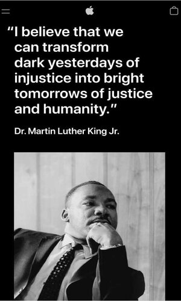

Visual Hierarchy
Apple
Apple homepage
In this main page this principle applies because what they are looking for users to see is the message from Martin L. King that's why the font size and the color have a big contrast to resalt the main message of the first page also in the other pages Apple uses the "Z" pattern.